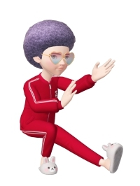

にゃん生における大きな一歩 [梅吉]
さてさて、キャットタワーを初めて見た梅吉さん。
組み立てている途中から登ったりして大変かな、と思ったのですが
彼ももうすぐ４ちゃい。
それなりの分別がついたのか組み立てている間はおとなしく見守ってくれました＾＾

設置が終わると新しもの好きな梅吉さんはすぐに食いつきますよw

おおおお〜！記念すべきキャットタワーへのファーストステップ。
後ろあちの勢いをお楽しみください＾＾

おもちゃにもすぐに反応。とりあえず試してみなくちゃね！
常に高みを目指す漢、梅吉。

うまいこと体をひねって

登って行きます(≧▽≦)

いきなりてっぺんを目指すのか！と思ったら

余裕のあくびです(⌒-⌒;
じらすんだから、もう〜！
クリアハンモックのステップに！
不思議そうにのぞいていますよ。

きた、きた、キターッ♪───Ｏ（≧∇≦）Ｏ────♪
このアングルがたまりません・・・
続きます。引っ張りますよ(*>艸<)
このクリアハンモック、ウワサには聞いてましたが
写真を撮っている姿から家の中が全部映り混んじゃうのが難点です(-_-メ)

ちぃ吉くん！
短い間によくそこまで店の実態をつかんだな！
いずれ話そうとは思っていたのだが・・・・・
ちぃママもこのタイミングで現れるとは都合の悪い。
あなた達をこのまま帰すわけには行かなくなってしまった！
お待ち！
そうは行かないよ！！002k！！！
あ！あなたは！！ちぃママのお店の・・・
なぜここがわかったんだ？
それはね！
私がお店の子達に
連絡したからさ。
ちぃママを
この店に誘導したのもね。
・・・・・・メカニックくつした！なぜ・・・なぜそんなことを・・・・・
確かに私はこの組織でメカニックとして協力してきた。
ちぃママたちの作っている怪しい薬作りは
やめさせなくちゃいけないと思っていたし。
でも！それとちぃ吉くんのことは別だよ。
支援をちらつかせて
望んでもいないスパイ行為に協力させるなんて
間違ってるよ！！
そうよ！
くーさんから話は聞いた。
ハワイは切り上げて来たわ！
emiちゃん・・・みんな・・・
まあまあみんな、落ち着いてちょうだい。
zombiekong姉さん！
会長！！
オーナー！！！
つづく・・・

カフェオレ色の梅吉

梅吉 2023年8月10日 永眠


梅吉と出会った譲渡会

犬猫の理由なき殺処分ゼロ
妄想広告
UMEKICHI 光

爆発的に早い！
時々攻撃的！
Thanks to Mr.Boss365
爆発的に早い！
時々攻撃的！
Thanks to Mr.Boss365

キャットタワーいいニャ～
キャットタワーもいいけど、私的には柱時計が懐かしい（ﾟ□ﾟ）
by 英ちゃん (2019-03-25 00:32)
キャットタワーもZEPETOもいいところで終わっちゃってる~!
上から覗く梅吉さんのお顔がかわゆいですね。
by zombiekong (2019-03-25 00:35)
壁と天井の防御は？
たぶんやりますよ＾＾
反射光はPLで減らせると思いますけど
暗くなっちゃうので室内では使い難いですね。
by ぽちの輔 (2019-03-25 07:02)
キャットタワー完成ですね！
うちの猫、初めてキャットタワーを見たときはあっと言う間に上まで昇ってご満悦でした。当時を思い出して懐かしいです(^_^)
by kou (2019-03-25 07:06)
梅吉さん、今まで見たことがない驚きの表情最高です。
by ニコニコファイト (2019-03-25 07:17)
キャットタワーを組み立て中も
大人しく見守るなんて梅吉さん、大人ですねぇ♪( ´▽｀)
うちは組み立て中のお手伝いを張り切ってくれたので
とてもとても時間がかかりましたw
しなやかに楽々と登りつつもタメを忘れない梅吉さん
魅せてくれますねぇ=(^.^)=
クリアハンモック、色んな表情を楽しめますねぇ*\(^o^)/*
by ニッキー (2019-03-25 08:15)
さすが！漢、梅吉さん♪
軽々とあがって行きますね(#^.^#)
クリアボウルから見る梅吉さんが新鮮ですねぇ～
あとはそこでまったりしてくれれば
お腹のモフモフを下から堪能出来そうです♪
by きぃ (2019-03-25 08:19)
初キャットタワー
一歩一歩登る梅吉さん
最後手前で大あくび やってくれますね〜
引っ張るな〜 楽しみ♪
by チャー (2019-03-25 08:48)
こんにちは。
梅吉の登頂？解説・ライブ感あり！！いい感じです（笑）
あくび？途中で標高高いので酸欠になりました・・・焦らしですか？（笑）
「きた、きた、キターッ」いいなー味わいたい。羨ましい！！
「難点です」か？のど飴なめて解決出来ませんか？
ZEPETO！！zombiekong姉さん！！いい感じで登場！！
梅吉君を従えてますね（爆）です！？(=^･ｪ･^=)
by Boss365 (2019-03-25 11:41)
梅吉さ～ん、4歳で分別ついちゃったらダメですよ～(^▽^;)
リビングを移動させるだけでしがみついて離れなかあったウチの7歳を目標に、しっかり暴れてくださいね(^_-)-☆
あ～やっぱりいいな～透明ボウル♪
梅吉さんの肉球がここにむぎゅっと押し付けられるのを心待ちにしています！！！
by ゆきち (2019-03-25 12:47)
ああ！ちらりと見下げる顔がキュートです～～
早く～腹～肉球～！！待ってますよ(*^_^*)
by palpal (2019-03-25 15:56)
ただいまー。帰ってきました。
実家のミイちゃんと遊んで(遊ばれて?)きましたよー。
キャットタワーあるんですけど、全然乗らない(^^;)
梅吉君、初対面でも果敢にアタックしてますねー。
クリアハンモック、入ってくれるかな、楽しみ、わくわく。
そして、ZEPETO妄想劇場！！ひゃーー、なんか、大変なことになってきたーー。先が気になるよぉーーー。木曜日まで待てない！(^^;)
100,000nice!お踏みいただきありがとうございます！
良かったぁ～。お友達でーー。前に、よく知らない人に踏み逃げされたことがあって、警戒してたのーー。
by ChatBleu (2019-03-25 16:12)
梅吉さん、キャットタワーで大あくびですね！
透明な所から覗くのも楽しいですね(^^)
by ma2ma2 (2019-03-25 17:04)
４歳ですでに分別ついているとはさすが！！
梅ちゃんお利口さんですね♪
うちのは、古いのを解体するとき、そばに
くっついて離れませんでした。
ボクのタワーに何をする？！と思っていたのでしょう(笑)
クリアボウルだと、下からのアングルが楽しめますね。
ぜひ肉球の撮影をお願いしまーーす(￣∀￣*)ｲﾋｯ
ZEPETO、zombie姉さんに梅ちゃんがくっついている
ところが最高ですっd(*￣∇￣)
by カトリーヌ (2019-03-25 17:05)
見下ろすまなざしがいいわあ。
続きが見たーいです♡
by liang (2019-03-25 18:30)
梅吉さん、まだ4歳なのですね！遊びたい盛りではないですか(^^
うちの熟女とは違いやはり身軽ですね♪
クリアハンモック、なるほど魚眼レンズのように？部屋中がうまいこと
丸写しですね、こうなったらお父さんもお母さんも猫の被り物でもして
全員猫になってみるのも楽しいかもですよ(笑
そういえば、中高生の間で耳の動く帽子？が流行っている模様。
お正月に同じその帽子を被った5~6人の女子を見て以来なんで揃いで？と
思っていた謎が解けました。深キョンがインスタであれ被ったのが始まりだそうです。って余計な情報ですがあの帽子も可愛かったよ。ご参考までに(笑
zombiekong姉さん梅吉さんを従えて堂々の登場ですね～～♪
by marimo (2019-03-25 19:27)
クリアハンモックを見下ろす梅吉さんの表情！！^^)
展望台やタワーに良くある、透明な床の部分に立とうと
する気分なのかもしれませんね。
だったらよく分かりますー。^^;
by yes_hama (2019-03-25 21:56)
梅吉さんのあくびは、緊張をほぐすためではないですか。
ユキもよくあくびををします。
私の顔を見てあくびします。
よっぽど、私には飽き飽きしているのかと悲しくなります＾＾
by riverwalk (2019-03-25 22:04)
クリアボール覗き込む姿が可愛いですねぇ
でも 高くて怖くないのかなぁ
by (。・_・。)２ｋ (2019-03-25 22:39)
ホントウダァ、後ろあち！勢過ぎて見えないほど（笑）
このおもちゃは、クリアハンモックの中から出ているのですか？
不思議な感覚ですね（笑）
梅吉さん、体を捻ってからの登り、初めてなのに上手くできますね〜
床が見えてますから、梅吉さんとしてはどのような感じなのでしょうね。
クリアハンモックに手を置く瞬間、きっと激写してますね（笑）
by kiki (2019-03-25 22:39)
初キャットタワーだったのですね、ちょっと意外でした^^
新しいものを散策する姿の楽しそうなこと！
そうか、梅ちゃまはまだ４ちゃい未満だったのですね！
あれれ・・・うちの９歳＆10歳になりますが、組み立て中から
落ち着きのないお邪魔虫っぷり・・・(￣▽￣;
クリアハンモック、やはり狙うは「下からにくきゅう」ですよね！（≧∀≦）
by Ja-Kou66 (2019-03-25 23:31)
きゃあ、なんて素直な梅吉さん、一歩一歩にわくわく～♪
かと思ったら、一回焦らし？
不思議そうなお顔がツボ！
ZEPETOも大きなスケールで展開！？
ついに！謎のオーナーさっそうと登場～☆
by sana (2019-03-26 00:26)
ようやくですねぇー＾＾＠
梅さま＾＾お行儀よく登って偉いです♪
覗きこみが最高アングルですねぇ(*^ω^*)
お部屋いつもきれいそうですので映り込み気にしなくても
だいじょぶだいじょぶです^^;
祝♬完成＾＾
by 猫毬 (2019-03-26 00:31)
梅吉くん〜〜！！
その下からのアングルがたまらないわ^^
気になるよね、梅吉くんもその場所からの下の景色、気になるよねー
続きが楽しみだよ〜〜〜
ZEPETO劇場もいよいよ佳境に入ってきた？(笑)
さあ、どうなる！！！？？？
メカニックくつした、活躍してるぅ〜^^)b
by リュカ (2019-03-27 07:38)
わははははー！
途中であくびかいー！と私もツッコミ入れましたわ(^_^;)
次回の続編、期待してます！！
by よーちゃん (2019-03-27 09:10)
猫って高い所でも怖くないのは何故だろう？。
飛び降りたとき着地が見事なのは何故だろう？。
by 旅爺さん (2019-03-27 16:25)
英ちゃんさん＞
柱時計は年代物、アンティークといえばかっこいいでしょうかw
文字盤にSEIKOSHAって書いています＾＾
zombiekongさん＞
両方とも引っ張りました＾＾
次回ご期待ください、って妄想劇場はお休みなんですw
結構編集に時間がかかって進まんのです・・・
梅吉に上から覗かれるのはあまりなかった体験なので
このアングルの写真撮りまくってます！
ポチの輔さん＞
壁と天井の壁紙は大丈夫なんですが
てっぺん近くにある時計と
エアコンに飛び移ろうとする様な仕草を見せます・・・
無理無理無理ーーーー！！
写り込んじゃう件は画像処理でなんとか対応できそうです＾＾
kouさん＞
あっという間・・・とっても嬉しかったのでしょうね＾＾
喜んでもらえるのは飼い主も何より嬉しいですよね！
梅吉は意外と慎重に登って行きました。
そこが４ちゃい？(*>艸<)
ニコニコファイトさん＞
良い表情してますよね！
下からのアングルもこれまでに無いショットなので
これから色々な顔をお見せできそうです＾＾
ニッキーさん＞
やややや・・・
４にゃんさんで寄ってたかってお手伝いしてくださったら
とてもとても大変そうですw
でも楽しそうな光景が目に浮かぶ様でもありますよ＾＾
クリアハンモック、梅吉がどんな風に使ってくれるのか
私もワクワクしてまーす！
きぃさん＞
漢、梅吉、ひるむことなく上がって行きました＾＾
高いところは全然平気なのでとっても嬉しそうですよー。
お腹のもふもふ、いつ見られるでしょうか。
夏になってボウルがひやっと気持ち良い♪
なんて思ってくれるといいのだけれどー！
チャーさん＞
あっという間に駆け上るかと思ったら一歩一歩
てっぺんまで行くのか？と思ったら大欠伸w
予測のつかない猫様です(*>艸<)
次回もお楽しみにー＾＾
Boss365さん＞
お伝えするには実況風が一番かなと思いましたよ＾＾
そうそう！難点、猫天ともかかっていましたね〜w
ちなみにのど飴は山之内のハーブキャンディが好きです！
梅吉も毎回登場します。
楽しみにお待ちくださいね＾＾
by ちぃ (2019-03-27 18:12)
ゆきちさん＞
最近みょーに分別ある梅吉ですw
以前のやんちゃっぷりと比べると、の話なので
他所から見れば「どこに分別？」って言われそうですけどw
その証拠に（？）ハンモックの付け替え作業の時は
電動工具持ち出しても全く動じずステップに乗ったままだったので
余力、溜めてたん？って(*>艸<)
透明ボウル・・・撮影が難しい・・・
良いレンズをお持ちで写真にこだわりのある猫父さんが撮ったら
綺麗なのが撮れそうだなーって思ってます＾＾
palpalさん＞
見下ろされるとこんなにキュートなのかーーーー！！！って
新たな発見ですわよ、奥さんっ0(≧▽≦)0
腹〜はもうちょっと先になりそうwww
ChatBleuさん＞
ご実家のミイちゃんの可愛いお姿日々目の保養をさせてもらってますよー＾＾
遊んで遊ばれて、楽しい時間♪
お外に出られる環境だとやっぱり出してあげたくなりますよね！
これからの季節我が家はベランダ。
手すり伝いに脱走されそうになった事があるので
目が離せない＆気が抜けないんですが嬉しそうに遊ぶので
時間がある時はお付き合いしています＾＾
ゼペット劇場、なかなか進まんのですwww
あと三回くらいで完結する予定なのでがんばるー！
ma2ma2さん＞
高いところは得意なので余裕でしたよ＾＾
透明ボウル、下から見ると魚眼風にまあるく見えるんですが
梅吉からはどう見えてるんだろう・・・
カトリーヌさん＞
梅吉は暴れん坊＆やんちゃすぎたので実は他所から見たら
まだまだぜんぜん分別ついて無いのかもしれませんwww
が、タワー設置時はおとなしく見ててくれました＾＾
肉球写真、撮るのがなかなか難しく・・・
皆様が萌え萌えしちゃうショットが撮れる様に精進しまーす！
ZEPETOの梅吉登場は飼い主の自己満足ですわー(￣∀￣*)ｲﾋｯ
liangさん＞
見下ろされるとこんなにキュートだとは！！
さてさて梅吉とキャットタワー・・・私も楽しみです♪
marimoさん＞
まだまだやんちゃ坊主なお年頃ですが
一時期よりはずいぶん落ち着きが出てきましたよ＾＾
家族全員ネコ仮装！
深キョンの耳の動くウサギ帽子見てきましたよw
ちょっとかぶってみたいかもー(*>艸<)
でもうちは梅吉が以前かぶった金太郎カツラが良いかなwww
ZEPETO劇場、今後も梅吉登場しますよ(≧▽≦)
by ちぃ (2019-03-28 16:28)
yes_hamaさん＞
展望台やタワーの足元の透明なやつ、
あれはゾワゾワ〜っとしますよねw
梅吉は怖がってはいない様なので
「これにはいってええんやろか・・・」と思っている様な。
目指すのはハンモックで香箱、です0(≧▽≦)0
riverwalkさん＞
あはは＾＾
梅吉もよく私の顔を見ながら大あくびしますよw
眠くなるほど安心できる顔なんだなーって思ってます！
ユキちゃんもきっとそうですよー(≧▽≦)
2kさん＞
高いところは全然平気なのですよ＾＾
クリアボールを足場にして壁にかかっている時計と
エアコンに飛び移ろうとする仕草を見せるので
それが要注意です！！
by ちぃ (2019-03-28 16:35)
kikiさん＞
がんばる後ろあちをうまく激写出来ました＾＾
おもちゃはクリアハンモックに穴が空いていて
そこを通す様になっています。
でも写真を写すときに邪魔になるかな、と
ハンモックからは取りました。
肉球ぎゅむ〜の瞬間は見たいやら、写したいやらで
大変でしたwww
Ja-Kou66さん＞
うちは高い場所に登れるところがたくさんあるので（笑
キャットタワーは必要ないかなと思ったのですが
親バカなのでついつい買ってしまいました(⌒-⌒;
いや〜、買ってよかったです！！
これからは今までにないショットをばんばんアップしますよー(*>艸<)
sanaさん＞
クリアハンモックは魚眼レンズの様な
不思議な見え方がするのでしょうか・・・
脚立のてっぺんに登って梅吉目線でどう見えているのか
一度チェックしなければ！！
ZEPETOはワールドワイドに攻めますよー(≧▽≦)
猫毬さん＞
組み立てましたよー！
梅吉は臆することなく「わしのものやな」と
当然な顔しながら登って行きましたw
家の中、片付けてはいるつもりですが
写真で見ると「！！！」ってものが写っている事があるので
要注意ですwww
by ちぃ (2019-03-28 18:08)
リュカさん＞
見下ろされるとたまらない・・・のよねー！！0(≧▽≦)0
今までもこれに近いアングルは見てましたが
直下だとひと味もふた味も違います！
しかも！下から覗いていると
お手手でちょいちょいしてくれる時があって
それがまたたまらなーい0(≧▽≦)0
梅吉のためにも自分のためにも（爆）
買ってよかったわ＾＾キャットタワー♡
ZEPETO、あと三回で終わりたい・・・
他のことが出来ないのっwww
よーちゃん＞
私もまさか〜のあくびでしたw
さすが猫様、マイペースです(*>艸<)
旅爺さん＞
平気で高いところに上がっちゃいますよねー。
見ているこちらがドキドキなことも！
着地、意外と失敗も多いんですよwww
by ちぃ (2019-03-28 20:39)